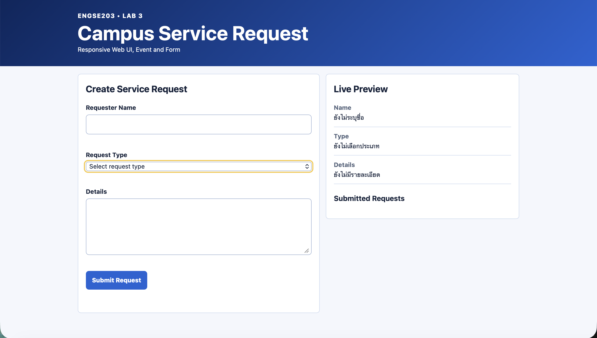
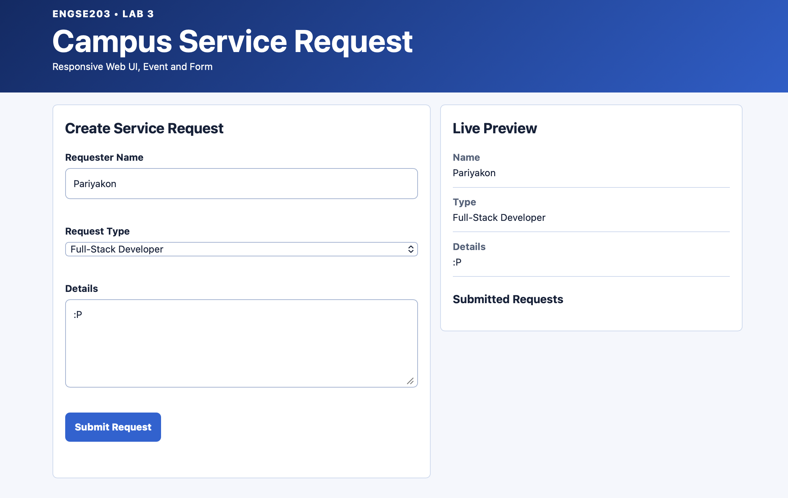
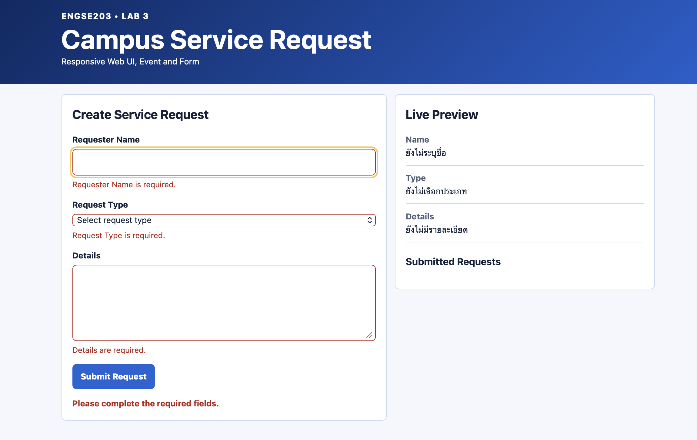
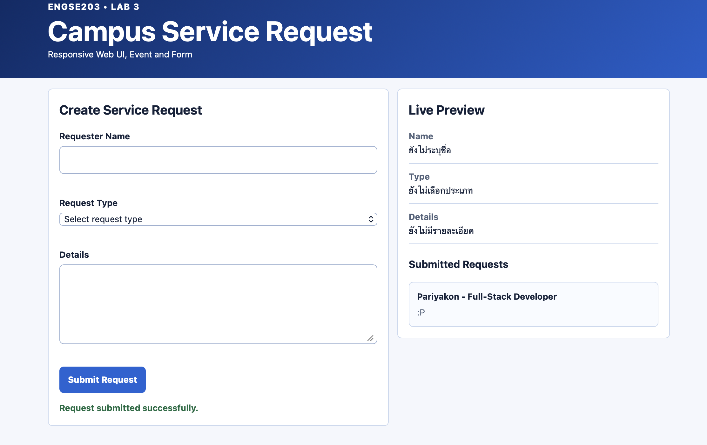
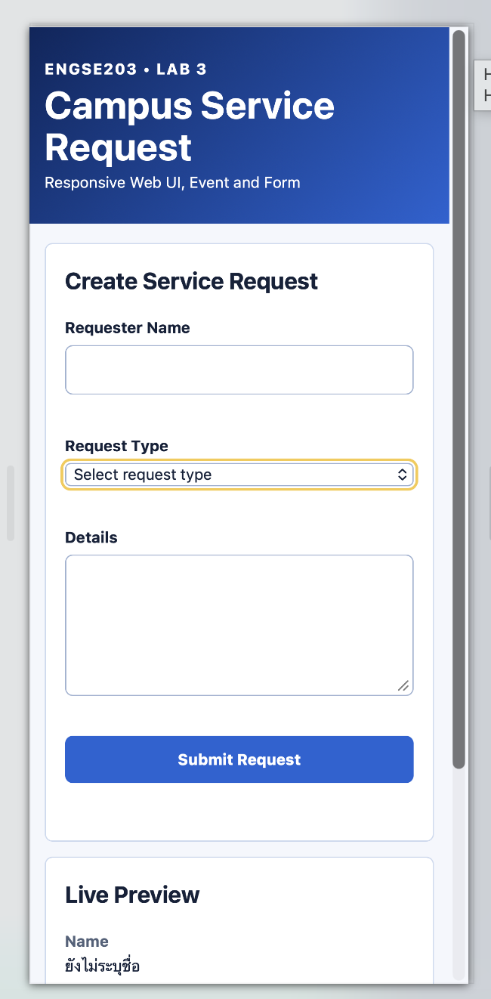

รายละเอียดผลงาน
Static site ต้องมี index.html ที่ publish root
ผลตรวจ: passVersion:
lab-03-submission-v1ภาพหลักฐาน (5)










เอกสารและผลการทดสอบ
README.md
# Week 03 Evidence ควรมี screenshots desktop/mobile, form valid/invalid และผล manual test ## desktop  ## mobile  ## form valid  ## invalid  ## manual test 
README.md
# ENGSE203 LAB 03 — Responsive UI & Form Interaction
> Campus Service Request
## Student Information
* **Student ID:** `68543210078-0`
* **Name:** `ปริยากร ธารพรศรี`
* **Operating System:** `macOS`
* **Browser:** `Safari`
* **GitHub Pages URL:** `<add after deployment>`
---
## Project Overview
LAB 03 เป็นการพัฒนาเว็บ **Campus Service Request** โดยใช้ HTML, CSS และ JavaScript เพื่อฝึกการสร้าง Responsive User Interface และการโต้ตอบกับ Form
เว็บสามารถรับข้อมูลคำร้องจากผู้ใช้งาน แสดงข้อมูลแบบ Live Preview ตรวจสอบความถูกต้องของข้อมูลก่อน Submit และแสดงรายการคำร้องที่ส่งสำเร็จ
แนวทางการออกแบบใช้ **Mobile-first Responsive Design** โดยหน้าเว็บจะแสดงแบบ 1 column บนอุปกรณ์ขนาดเล็ก และเปลี่ยนเป็น 2 columns บนหน้าจอขนาดใหญ่
---
## Features
### 1. Responsive Layout
รองรับการแสดงผลทั้ง Desktop และ Mobile
* Mobile ขนาดประมาณ `375px` แสดงผลแบบ 1 column
* Desktop แสดง Form และ Preview แบบ 2 columns
* ไม่มี horizontal scrolling
* Input และ Form ปรับขนาดตามหน้าจอ
### 2. Campus Service Request Form
Form ประกอบด้วย:
* Requester Name
* Request Type
* Details
* Submit Request button
ตัวอย่าง Request Type:
* IT Support
* Facility
* Academic
* Student Service
### 3. Live Preview
ข้อมูลที่ผู้ใช้กรอกจะแสดงในส่วน **Live Preview** ทันทีโดยไม่ต้องกด Submit
ใช้ JavaScript Event:
```javascript
form.addEventListener("input", () => {
const data = readForm();
renderPreview(data);
});
```
### 4. Form Validation
ระบบตรวจสอบว่าผู้ใช้กรอกข้อมูลครบหรือไม่ก่อน Submit
ตัวอย่างข้อความ Error:
```text
กรุณากรอกชื่อผู้แจ้ง
กรุณาเลือกประเภทคำร้อง
กรุณากรอกรายละเอียด
```
ถ้าข้อมูลไม่ครบ:
* แสดง Error message
* ไม่เพิ่มรายการคำร้อง
* ไม่ Reset Form
### 5. Successful Submission
เมื่อกรอกข้อมูลครบและ Submit สำเร็จ:
* เพิ่มข้อมูลเข้าสู่ Submitted Requests
* แสดงข้อความสำเร็จ
* Reset Form
* Reset Live Preview
* ล้าง Error message
---
## Technologies Used
* HTML5
* CSS3
* JavaScript ES Modules
* DOM API
* FormData API
* Vite
* Node.js
---
## Project Structure
```text
labs/week-03/
├── README.md
├── lab-metadata.json
├── evidence/
│ ├── desktop.png
│ ├── mobile-375.png
│ ├── invalid-form.png
│ ├── valid-submit.png
│ └── test-cases.md
│
├── source/
│ ├── index.html
│ ├── package.json
│ ├── package-lock.json
│ ├── vite.config.js
│ └── src/
│ ├── main.js
│ └── style.css
│
└── publish/
```
> ชื่อไฟล์ใน `evidence/` สามารถแก้ให้ตรงกับ Screenshot ที่ใช้จริงได้
---
## Main Files
### `index.html`
ใช้สร้างโครงสร้างของหน้าเว็บและ Form เช่น:
* Requester Name
* Request Type
* Details
* Live Preview
* Submitted Requests
ใช้ Semantic HTML และเชื่อม `label` กับ Form controls ผ่าน `for` และ `id`
---
### `src/style.css`
ใช้กำหนดหน้าตาและ Responsive Layout ของเว็บไซต์
ใช้แนวทาง Mobile-first โดยค่าเริ่มต้นเป็น 1 column:
```css
.page-grid {
display: grid;
grid-template-columns: 1fr;
}
```
และเปลี่ยนเป็น 2 columns บนหน้าจอขนาดใหญ่:
```css
@media (min-width: 48rem) {
.page-grid {
grid-template-columns:
minmax(0, 1fr)
minmax(0, 1fr);
}
}
```
Theme ของหน้าเว็บใช้โทนสีน้ำเงินใกล้เคียงกับ Pre-LAB 03
---
### `src/main.js`
ใช้ควบคุมการทำงานของ Form และ DOM
ฟังก์ชันหลักประกอบด้วย:
```javascript
readForm()
renderPreview()
validate()
renderErrors()
```
และมี Event Listener สำหรับ:
```javascript
input
submit
```
ข้อมูลจากผู้ใช้ถูกแสดงผ่าน `textContent` เพื่อหลีกเลี่ยงการนำ HTML จากข้อมูลที่ผู้ใช้กรอกมาแสดงโดยตรง
---
## Installation
ติดตั้ง Dependencies:
```bash
npm --prefix labs/week-03/source install
```
---
## Run Development Server
```bash
npm --prefix labs/week-03/source run dev
```
จากนั้นเปิด URL ที่ Vite แสดง เช่น:
```text
http://localhost:5173/
```
---
## Syntax Check
ตรวจสอบ JavaScript:
```bash
npm --prefix labs/week-03/source run check
```
Expected Result:
```text
No syntax errors
```
---
## Build
สร้าง Production Build:
```bash
npm --prefix labs/week-03/source run build
```
Output จะถูกสร้างที่:
```text
labs/week-03/source/dist/
```
---
## Import Publish Output
นำ Build Output เข้า Student Repository:
```bash
npm run import:publish -- week-03 labs/week-03/source/dist
```
---
## Manual Testing
ทำการทดสอบอย่างน้อยดังนี้:
| Test Case | Expected Result |
| ----------------- | ----------------------------------- |
| Desktop Layout | Form และ Preview แสดงเป็น 2 columns |
| Mobile 375px | แสดงเป็น 1 column |
| Horizontal Scroll | ไม่มี horizontal scrolling |
| Live Preview | ข้อมูลเปลี่ยนทันทีเมื่อกรอก Form |
| Empty Submit | แสดง Validation Error |
| Invalid Submit | ไม่เพิ่มรายการและไม่ Reset Form |
| Valid Submit | เพิ่ม Submitted Request สำเร็จ |
| Form Reset | Form ถูก Reset หลัง Submit สำเร็จ |
| Console | ไม่มี JavaScript Error |
---
## Evidence
หลักฐานการทดสอบเก็บไว้ใน:
```text
labs/week-03/evidence/
```
### Desktop Layout
```markdown

```
### Mobile 375px
```markdown

```
### Invalid Form Validation
```markdown

```
### Successful Submission
```markdown

```
---
## Verification
หลังจาก Build และเพิ่ม Evidence แล้ว ให้รัน:
```bash
npm run build:pages
```
จากนั้น:
```bash
npm run verify:lab -- week-03
```
Expected Result:
```text
PASS
```
---
## Git Workflow
Branch ที่ใช้:
```text
lab/week-03
```
Commit สำหรับตัวงาน:
```bash
git add .
git commit -m "feat(week-03): complete responsive service request UI"
git push -u origin lab/week-03
```
หลังจากเปิด Pull Request และเพิ่ม Submission Metadata:
```bash
git add .
git commit -m "docs(week-03): add submission metadata"
git push
```
Submission Tag:
```text
lab-03-submission-v1
```
---
## Problems and Solutions
### Problem: JavaScript file could not be loaded
พบ Error:
```text
Failed to load url /src/app.js
Does the file exist?
```
### Cause
`index.html` อ้างอิง JavaScript ผิดชื่อ:
```html
<script type="module" src="/src/app.js"></script>
```
### Solution
เปลี่ยนให้ตรงกับไฟล์จริง:
```html
<script type="module" src="/src/main.js"></script>
```
---
### Problem: Variable declared more than once
พบ Error:
```text
SyntaxError: Identifier 'form' has already been declared
```
### Cause
ประกาศตัวแปร:
```javascript
const form = document.querySelector("#request-form");
```
ซ้ำมากกว่า 1 ครั้ง
### Solution
ลบ declaration ที่ซ้ำออกและให้เหลือเพียงครั้งเดียว
---
## What I Learned
จาก LAB 03 ได้เรียนรู้เกี่ยวกับ:
* การสร้าง Responsive Web Design แบบ Mobile-first
* การใช้ CSS Grid
* การใช้ Media Query
* การสร้างและจัดการ HTML Form
* การใช้ `FormData`
* การใช้งาน DOM API
* การใช้ `input` และ `submit` events
* การทำ Form Validation ด้วย JavaScript
* การใช้ `event.preventDefault()`
* การแสดงข้อมูลด้วย `textContent`
* การจัดการ Error และ Status Message
* การทดสอบ Responsive Design ด้วย Safari Developer Tools
* การ Build Web Application ด้วย Vite
---
## AI / External Resource Disclosure
* **AI tool used:** ChatGPT
* **Used for:** อธิบายขั้นตอนการทำ LAB 03, ตรวจสอบข้อผิดพลาดของ JavaScript, แนะนำแนวทาง Responsive CSS และ Form Validation
* **My adaptation:** ศึกษาแนวทางที่ได้รับและนำมาปรับใช้กับโครงสร้าง Starter Code ของ LAB 03 รวมถึงทดสอบและแก้ไขโค้ดให้สามารถทำงานตาม Requirements ของงานได้
---
## Submission
* **Branch:** `lab/week-03`
* **Pull Request:** `<add PR URL>`
* **Submission Tag:** `lab-03-submission-v1`
* **Test Status:** `<pass after verification>`
* **GitHub Pages:** `<add after deployment>`